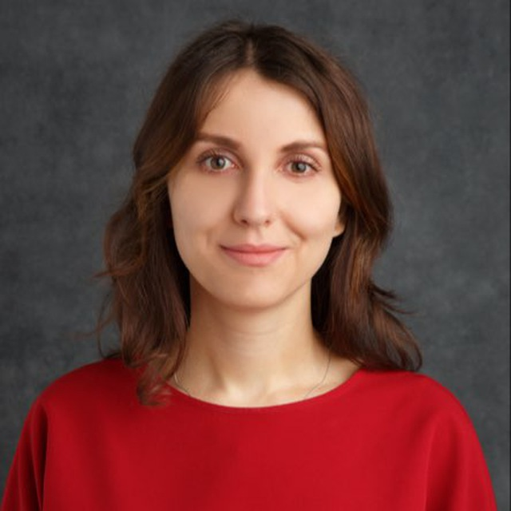
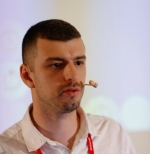
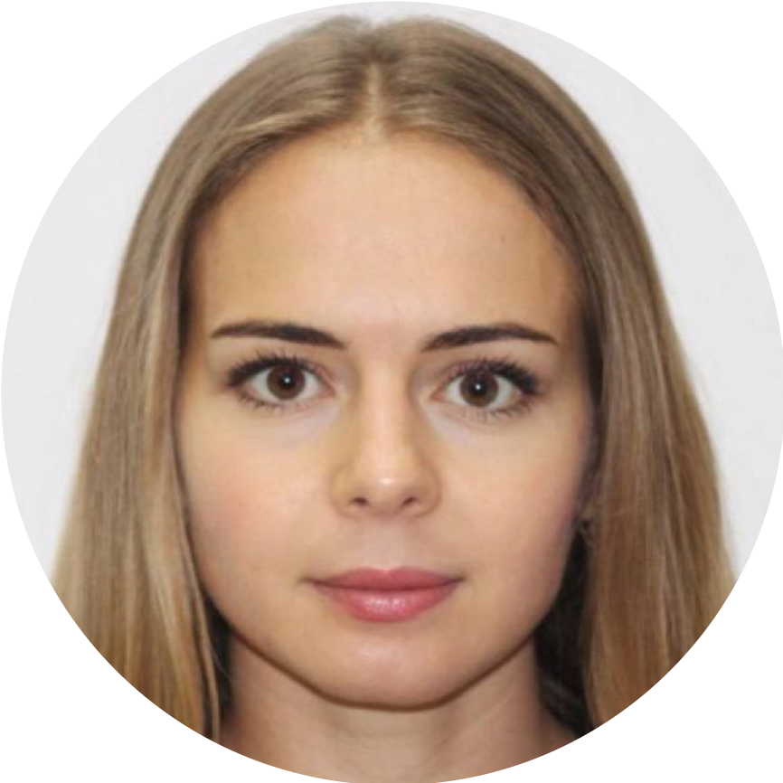
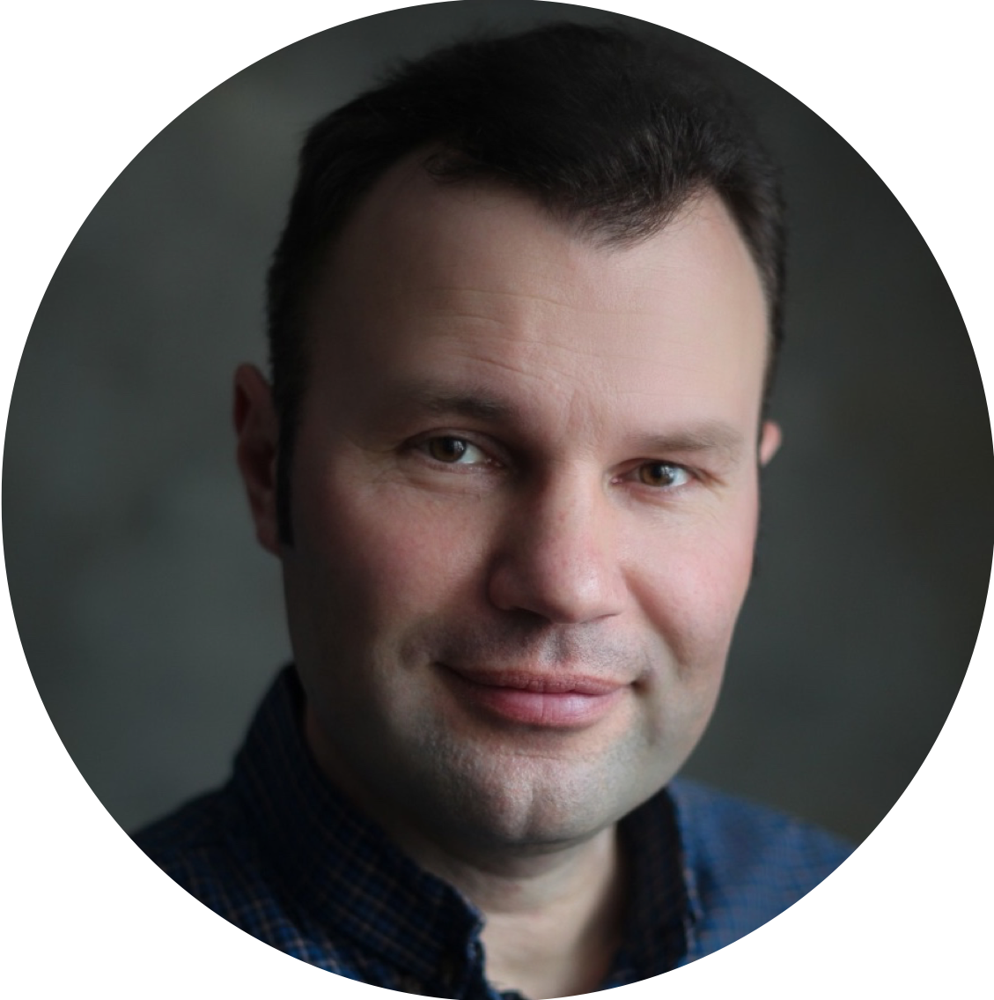

Отзывы
Что говорят клиенты и спикеры о работе со мной

Что говорят клиенты и спикеры о работе со мной
Системный аналитик (Альфа-Банк)
Июнь 2023

Директор направления (X5 Retail Group)
Июль 2023

Ведущий аналитик

Аналитик

Руководитель направления по архитектуре в финтех компании

Коучинг

Ведущий бизнес-аналитик

Project manager

Аналитик (НОТА / Т1)
Август 2023

Ведущий бизнес-аналитик в X5 Tech Опыт работы как в заказной, так и продуктовой разработке для российских и зарубежных компаний Спикер конференции Smart Speaker Conf
Февраль 2025

Бизнес-аналитик (Иннотех / Т1)
Август 2023
Бизнес-аналитик, руководитель офиса ПМО
Август 2023
Директор направления (X5 Retail Group)
Июль 2023

Руководитель консалтинговой компании "Не просто идея"(внедрение проектного управления, автоматизация процессов) с 2014.
Май 2024

Бизнес-аналитик в группе компаний Рексофт Преподаватель в Воронежском Государственном Университете на Факультете Компьютерных наук Амбассадор использования генеративных нейронных сетей в части выполнения профессиональных, в т.
Март 2025

Консультант по технологиям, CTO advisor СТО в «Сбербанк страхование жизни» В прошлом работал в «Альфа-Банк» и «Сбертехе» на ключевых проектах.
Май 2024

Практикующий биографический консультант (института Биографического консультирования)
Февраль 2025

Продакт-менеджер в b2b продукте
Декабрь 2023

Бизнес-аналитик (EPAM)
Январь 2023

Аналитик (НОТА / Т1)
Август 2023
Бизнес системный аналитик (Сфера платежных решений)
Декабрь 2023
Vice President of Product Design, Temporal Games Inc.
Декабрь 2023

Практик бирюзовых продаж и Sociocracy 3.
Июнь 2024

Бизнес-аналитик (НОТА / Т1)
Август 2023
Аналитик (НОТА / Т1)
Август 2023
Руководитель гильдии бизнес и системных аналитиков и технических писателей (Приложение Кошелёк)
Декабрь 2023
Ведущий бизнес-аналитик в X5 Tech Опыт работы как в заказной, так и продуктовой разработке для российских и зарубежных компаний Спикер конференции Smart Speaker Conf
Февраль 2025

Руководитель группы развития анализа (BIA-Technologies)
Декабрь 2023
Менеджер центра компетенций Бизнес-анализа (X5 Tech)
Декабрь 2023

Product Unit Lead, Avito Ex-VK, MTS, T1, LANIT Запускает продукты, руководит людьми, развивает команду, ведет канал Полтора Продакта о кейсах в работе в ИТ: авторитете продакта, сложных ситуациях и том, как устроены процессы и рост в больших ИТ-компаниях Спикер конфенции Smart Speaker Conf
Май 2024
Бизнес-аналитик (НОТА / Т1)
Август 2023
Старший руководитель проектов, Газпромнефть - Цифровые решения.
Май 2024
Продакт-менеджер (НОТА / Т1)
Февраль 2023

Бизнес-аналитик (НОТА / Т1)
Август 2023
Лидер направления Бизнес-анализа в компании ITentika (бывший DataArt) Основатель образовательного портала в сфере бизнес-анализа - IT-Metla Выступала на конференции Analyst Days-17.
Декабрь 2023

Бизнес-аналитик (НОТА / Т1)Выступал на конференции Analyst Days-17 в рамкахсекции СфераПрошел подготовку докладу по курсуSmart Speaker miniскураторством
Декабрь 2023

Head of start-up group IT-интегратора KT.
Май 2024

Аналитик (НОТА / Т1)
Август 2023